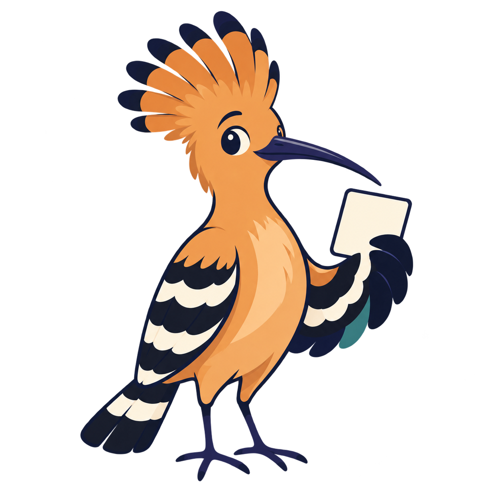

עמדה
הסוגיות שעל הפרק, העמדה שלך
מקום לחשוב בעצמך
מה חשוב לך במדינה?
בכל סוגיה בוחנים את היתרונות והפשרות, בוחרים מתווה שאליו מתחברים ומרכיבים מצע אישי מלא שאפשר לשתף בקלות.
עמדה עוזר לך לברר מה חשוב לך בסוגיות מרכזיות ולנסח את המצע האישי שלך.
עמדה הוא כלי עצמאי, ללא שיוך מפלגתי. הכלי אינו ממליץ למי להצביע.
המצע האישי שלי
מה עולה מהמצע שלך?
קריאה קצרה של הדפוסים שעולים מהמתווים שנבחרו. זו פרשנות תמציתית, לא שיוך פוליטי ולא המלצת הצבעה.
המצע המלא ועריכת כרטיס השיתוף
מה העדיפויות שלך?
בחרו עד שלושה נושאים לכרטיס השיתוף. אחר כך אפשר לערוך את הנוסח המקוצר בכרטיס; המצע המלא לא ישתנה.